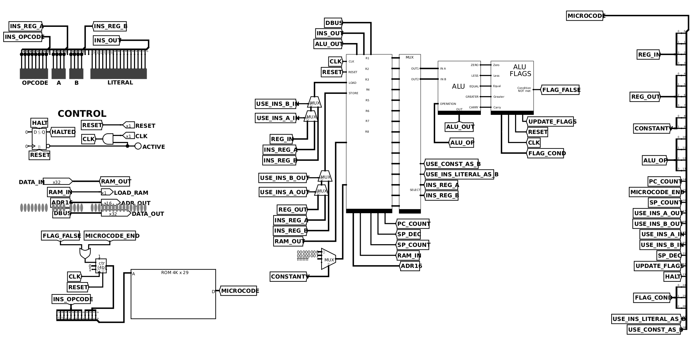
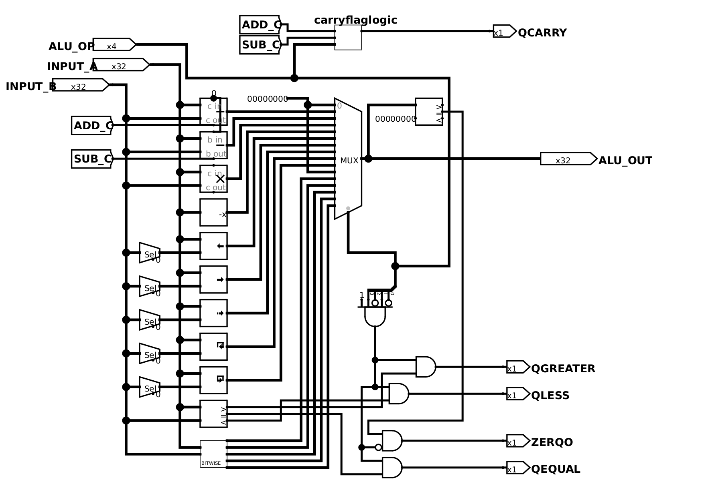
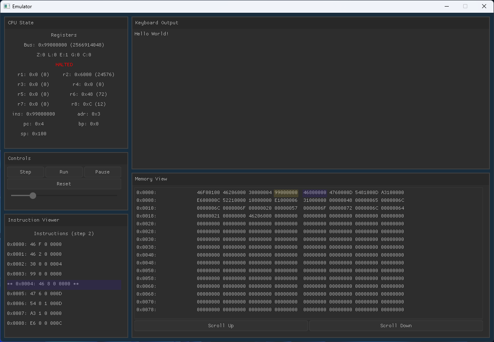
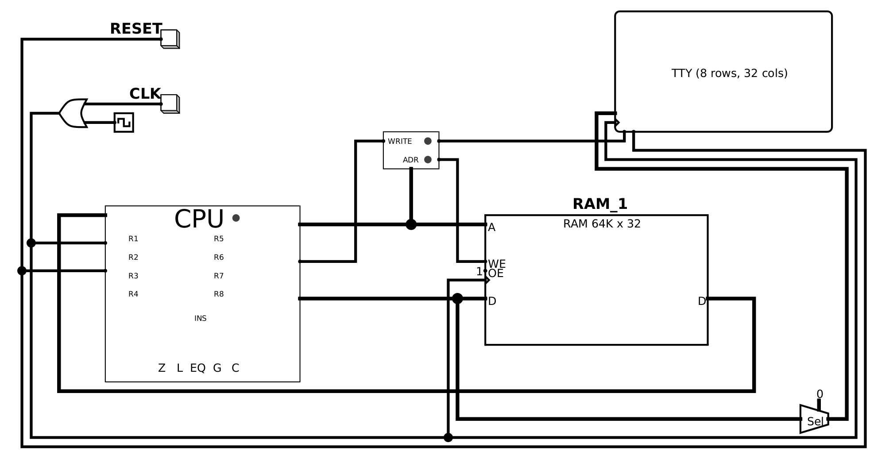

Gabriel West · Computer Engineering, University of Illinois Urbana-Champaign · gwest9@illinois.edu · github.com/gw12343
Custom 32-bit CPU & Complete Toolchain
A 32-bit CPU with original ISA, architecture, assembler, emulator, and FPGA port, running real programs on the board. The ISA has 32-bit encodings, eight GPRs, and a microcoded control unit. It is specified in the Java two-pass assembler which emits Program.rom and Microcode.rom together. The CPU design was originally implemented in Logisim with an accompanying bit-exact C emulator which steps through the same 29 control lines and loads identical ROMs.
FPGA bring-up
This same emulator then served as the verification reference for the FPGA port accomplished with fpga-builder. Waveforms of Fibonacci and softfloat test programs show perfect matches between RTL and reference emulator, shown on the fpga-builder page. Timing closed at 50 MHz on a Nexys A7-100T. The clip below is Snake, written in this assembly, running on the board: inputs are the physical buttons, output is UART to a host terminal.
Hardware Design
CPU Architecture
Github Source - Logisim Circuit

This Logisim schematic is the CPU: eight GPRs, plus SP, BP, PC, AR, and IR. A 32-bit ALU raises five flags (Z, L, EQ, G, C). Control comes from a 4K × 29-bit microcode ROM. Software talks to the world by storing to 0x6000: TTY on this test circuit, UART on the FPGA.
Core components: - 8 General-Purpose Registers (R1–R8) - Special Registers: Program Counter, Stack Pointer, Base Pointer, Address Register, Instruction Register - 32-bit ALU with 15 operations and 5 status flags (Zero, Less, Equal, Greater, Carry) - Microcoded Control Unit using 4K × 29-bit ROM - Memory-Mapped I/O at address 0x6000 for text output
ALU Design

The ALU does 15 operations: add/sub with carry, the usual bitwise ops, shifts, and comparisons. Arithmetic and compare can update Z, L, EQ, G, and C, and microcode uses those flags for conditional jumps.
- Arithmetic: ADD, SUB with carry
- Logic: AND, OR, XOR, NOT, NAND, LSL, ASR
- Comparison: Less than, equal, greater than
Microcode Control

The microcode word is 29 bits. Those bits are the control lines into the datapath: register in/out, ALU op, memory, PC/SP, flags. The ROM is indexed by opcode plus a 4-bit microcycle, so each instruction gets up to 16 steps. If the requested flag condition is false, FLAG_FALSE resets the microcycle and the rest of the instruction does not run, which is how a jump is taken or not. A new opcode is a new sequence in CPUInstruction; assembling writes an updated Microcode.rom without rewiring Logisim.
Software Toolchain
Dual-Purpose Assembler
- Assembly Translation: Converts human-readable assembly to machine code
- Microcode Generation: Produces the control ROM for the CPU

The ISA is specified in the assembler. CPUInstruction holds each opcode and its control-line sequence. AssemblerMnemonic is the assembly spelling of that. So mov r2, #$6000 encodes as 0x46206000, and a new instruction is an enum plus a microcode list. The assembler writes both Program.rom and Microcode.rom in one run, which is why Logisim, the emulator, and the board cannot drift.
Instruction Format
All instructions follow a standardized 32-bit format:
--------opcode-------- ----r1---- ----r2---- --------------literal--------------
8 bits 4 bits 4 bits 16 bits
Type-Safe Operand System
public enum OperandType {
REGISTER, // r1, r2, etc.
REGISTER_IND, // [r1] - indirect
REGISTER_IND_OFFSET, // [r1+offset]
IMD, // #42 - immediate
MEM, // $2000 - memory address
MEM_IND, // [$2000] - memory indirect
LABEL // LOOP1 - symbolic address
}
Example instruction mapping:
MOV(Map.of(
new OperationHeader(REGISTER, REGISTER), CPUInstruction.MOV, // register to register
new OperationHeader(REGISTER, IMD), CPUInstruction.MOVI, // value to register
new OperationHeader(REGISTER, MEM), CPUInstruction.MOVFROMABS, // mov value from address
new OperationHeader(MEM, REGISTER), CPUInstruction.MOVTOABS // mov value to address
));
Microcode Definition
Each instruction defines its microcode execution sequence:
MOVTOABS(
List.of(
STORE_LIT | LOAD_ADDR, // literal → address register
STORE_INS_A | LOAD_RAM, // register → RAM[address]
MC_END // end instruction
),
0x49, // opcode
InstructionData.lit1register2()
),
Instruction Set Architecture
Opcodes, lo byte top, hi byte left:
Color in the table is the instruction class: green arithmetic, blue logic, yellow MOV (register, immediate, absolute, indirect, indexed), purple jumps, pink stack/call/flags, red HLT/NOP/CMP/IRQ/RTI.
Assembly Process
Two-Pass Assembly: 1. First Pass: Label resolution and symbol table generation 2. Second Pass: Instruction encoding and memory image creation
Illegal operand shapes fail at assemble time, with a line number, instead of becoming a bad opcode. ADD #1, #1 is the example below.
Ln 14: Exception: ADD: Invalid operands (IMD, IMD)
Expected: (REGISTER, REGISTER) or (REGISTER, IMD)
Emulator & Debug Environment
Cycle-Accurate Simulation

The emulator decodes the same 29-bit microcode word as Logisim, so a control-line bug shows up here in seconds instead of in the schematic. You can step one microcycle, or run continuously at an adjustable rate (capped so the GUI does not stall). Registers, flags, PC/SP/AR, and the last bus value update live. The hex view highlights the address register and the PC. Writes to 0x6000 go to the TTY pane.
The C-based emulator with Nuklear GUI provides:
- Cycle-accurate execution at microcode granularity, stepping the same 29 control lines as Logisim
- Live register, flag, and memory inspection
- Single-step or continuous run at adjustable speed
- Memory hex viewer with AR and PC highlights
- Terminal output from memory-mapped I/O at 0x6000
Development Workflow
The assembler is the only definition of the ISA, so the loop is short on purpose: write assembly, assemble once, then run.
- Write Assembly Program
- Run Assembler → outputs
Program.romandMicrocode.rom - Load those same files into Logisim, the emulator, or the Nexys A7
- Debug and Iterate
Logisim, the emulator, and the Nexys A7 are three hosts for those two files, not three instruction sets. If they disagree, that is a bug in one host.
Sample Programs
Hello World
mov sp, #$100 ; Setup stack
mov r2, #$6000 ; Store memory mapped address
; (0x6000) of output display
call print_func
hlt ; Halt program
print_func:
mov r8, #$0 ; Initialize counter with 0
mov r6, message ; Initialize counter with 0
func_loop:
mov r1, [r8+message] ; Load next char
cmp r1, #0 ; Check if char is null
je func_end ; If it is, end
mov [r2], r1 ; Put next char in output
inc r8 ; Increment char ptr
jmp func_loop ; Loop
func_end:
ret ; Return from method
message: .asciiz "Hello World!" ; Store null-terminated string
; using .asciiz directive
Hello World writes each character to 0x6000. On the Logisim test circuit that address is the TTY, as shown below. On the Nexys A7 0x6000 is associated with UART, which is how Snake draws the terminal.

In short, the assembler specifies the ISA and writes Program.rom and Microcode.rom together, ensuring consistency. Logisim, the emulator, and the Nexys A7 load identical copies of those files. The emulator was the golden model for the CPU RTL (fpga-builder). Snake running on the physical FPGA is the end of that chain.
Built with: Logisim, Java, C, Nuklear GUI, Vivado, Nexys A7-100T